Menos crise, mais rotina previsível pro seu filho no espectro.
Nada de rolar a internet tentando adivinhar o que serve. Conte pra gente o momento que vocês estão vivendo e o Mapa monta o caminho certo — pela idade, pelo nível de comunicação e pelo desafio real do seu filho agora.
Acesso vitalício, sem mensalidade · sem cadastro pra ver seu plano
Não existe resposta certa ou errada — só queremos entender o momento real de vocês.
Qual a idade do seu filho(a)?
Qual desses é o maior desafio agora?
Qual desses é o maior desafio agora?
Qual desses é o maior desafio agora?
Qual desses é o maior desafio agora?
2 de 6 respondidas — já dá pra sentir o perfil dele(a)
As próximas perguntas ajustam ainda mais o plano pra rotina de vocês. Bora continuar?
Como é a comunicação dele(a) hoje?
Como é a comunicação dele(a) hoje?
Como é a comunicação dele(a) hoje?
Como é a comunicação dele(a) hoje?
O que mais acalma ele(a) hoje?
O que mais acalma ou interessa ele(a) hoje?
O que mais acalma ou interessa ele(a) hoje?
O que mais acalma ou interessa ele(a) hoje?
4 de 6 — faltam só 2 perguntinhas
Isso já está ficando bem específico pro momento dele(a). Vamos terminar?
Quanto tempo por dia vocês conseguem dedicar a uma atividade guiada?
O que mais traria alívio nos próximos 30 dias?
O que mais traria alívio nos próximos 30 dias?
O que mais traria alívio nos próximos 30 dias?
O que mais traria alívio nos próximos 30 dias?
Seu plano está pronto
Baseado nas suas respostas, montamos um caminho de atividades pra essa fase.
Ver meu plano completoNão é uma lista solta de atividades. É um plano.
A diferença entre "ter acesso a mais de 500 atividades" e "saber exatamente qual usar essa semana" — o Mapa resolve a segunda parte.
Você conta pra gente o momento de vocês
6 perguntas sobre idade, nível de comunicação e o maior desafio de agora — cada resposta ajusta o plano pro seu filho.
Geramos seu plano
Um recorte do acervo organizado pra esse desafio específico, não a lista inteira de uma vez.
Você imprime e aplica
Escolhe uma atividade do plano, imprime em minutos e usa como apoio complementar ao que já é trabalhado na terapia.
Cada atividade tem um propósito, não só uma cor bonita
Rotina e Antecipação
Cartões visuais de sequência e apoio pra transição entre atividades.
Comunicação
Apoio visual pra expressar necessidade, escolha e emoção, mesmo antes da fala.
Regulação Sensorial
Atividades calmas pra identificar gatilho e reduzir sobrecarga.
Autonomia e Habilidades do Dia a Dia
Passo a passo visual pra vestir-se, higiene e alimentação, com autonomia.
Interação Social
Convites curtos de interação, no tempo da criança, sem pressão.
Coordenação Motora e Atenção
Traçados e desafios de atenção adaptados ao ritmo sensorial da criança.
14 atividades de exemplo, direto do acervo
Formato usado em toda a coleção: imagem real da atividade, área de apoio e título — prontas pra imprimir e aplicar em casa ou em atendimento.

Minha Rotina do Dia
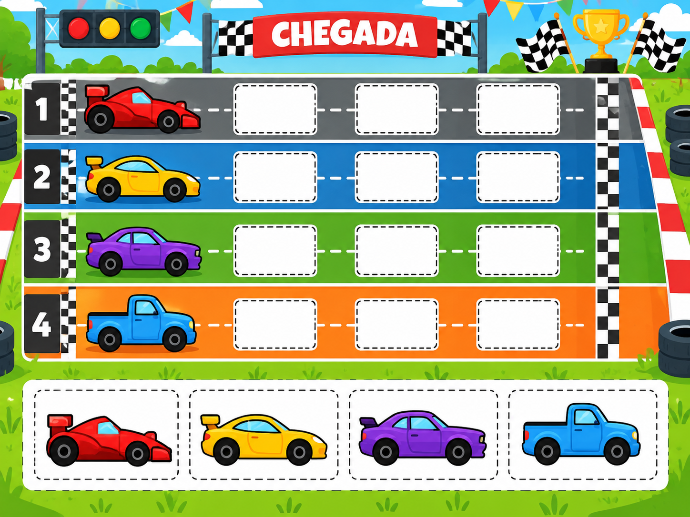
Ordem de Chegada
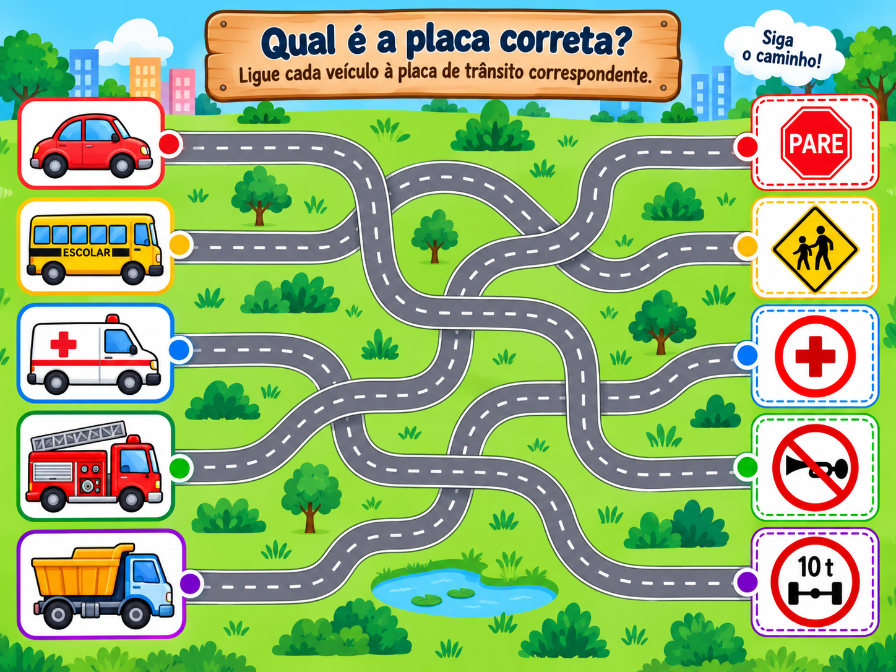
Qual é a Placa?
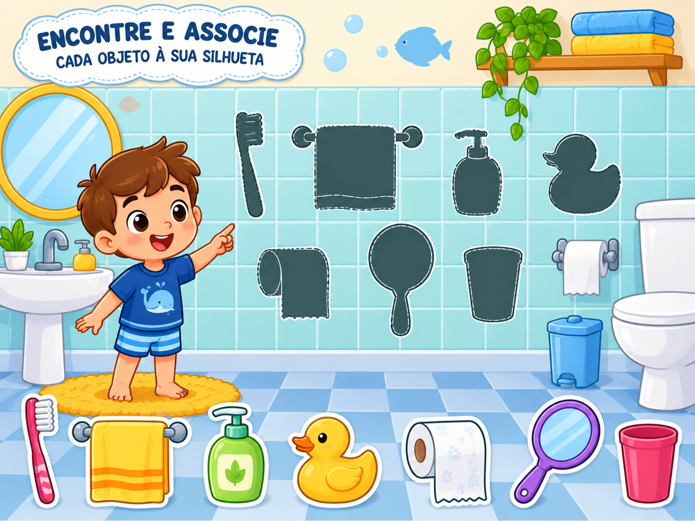
Organize o Banheiro
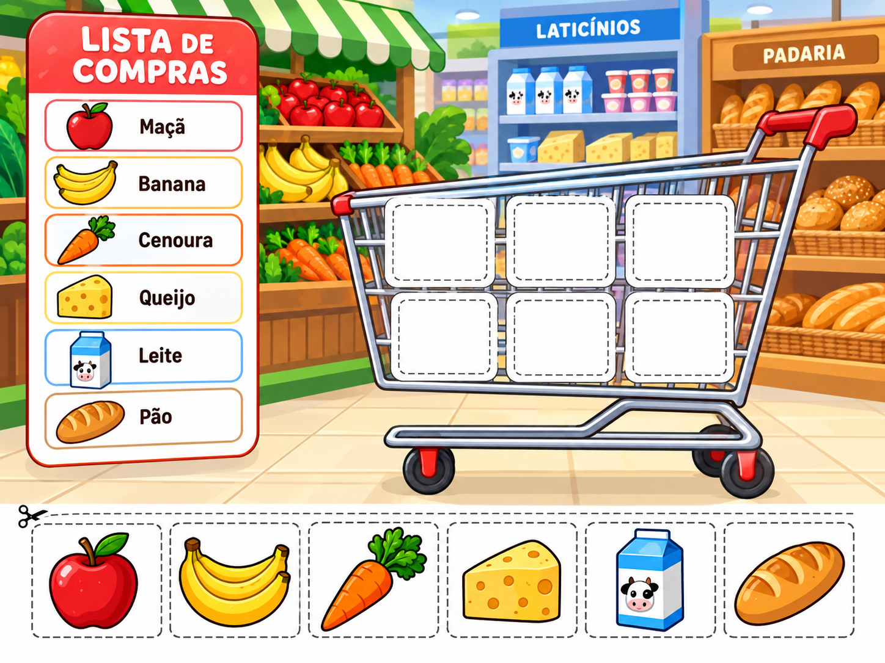
Lista de Compras
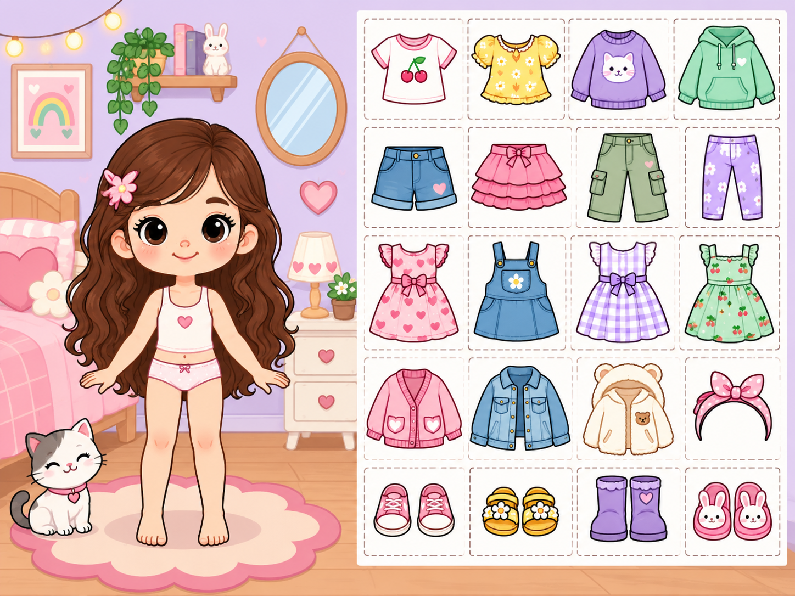
Vista o Boneco

Trilha e Labirinto
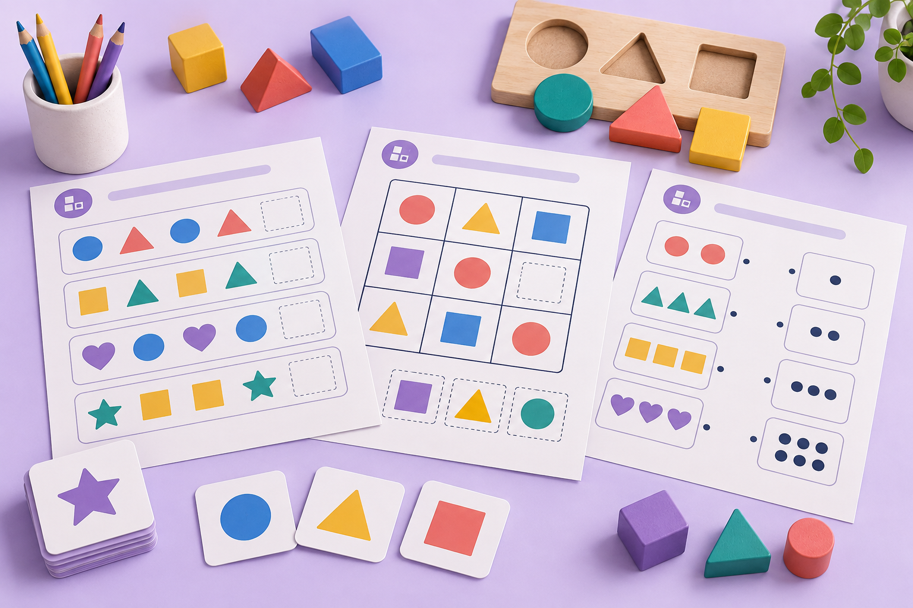
Complete o Padrão

Igual ou Diferente
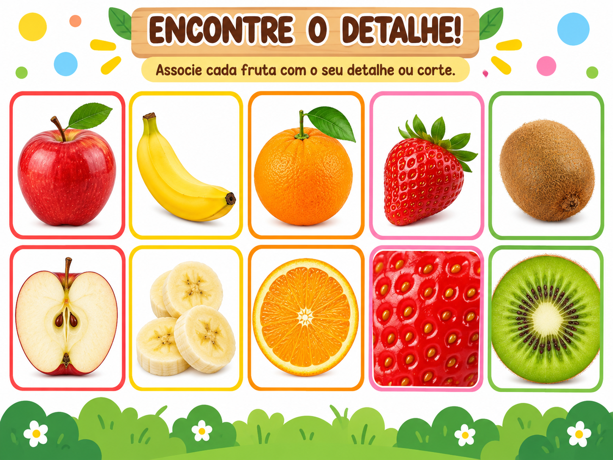
Encontre o Detalhe
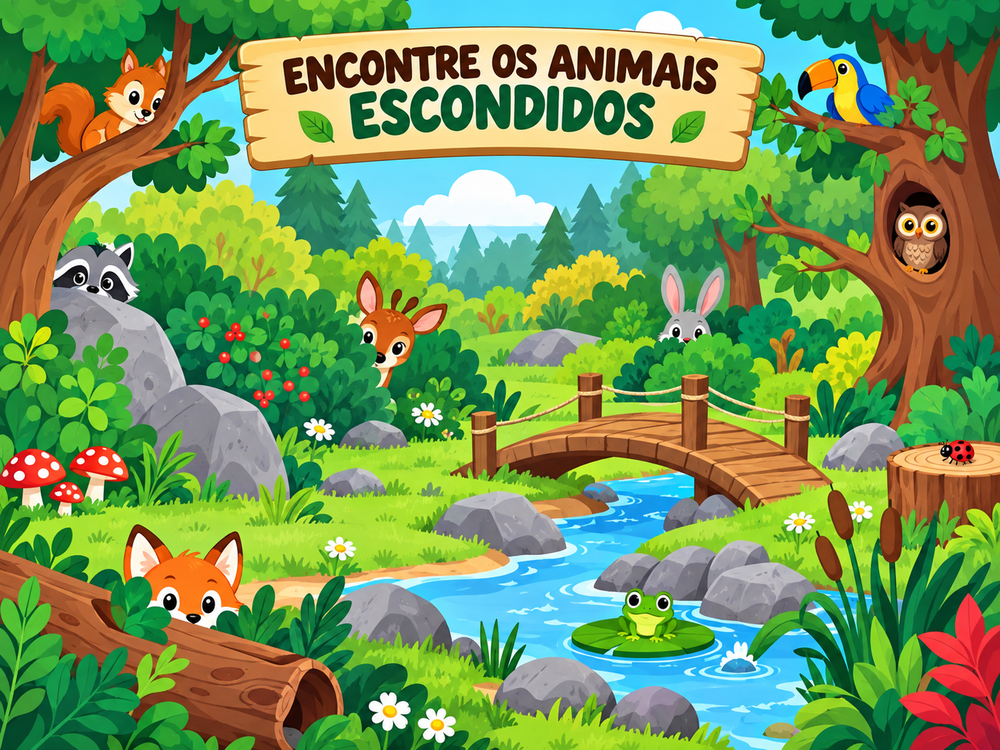
Animais Escondidos
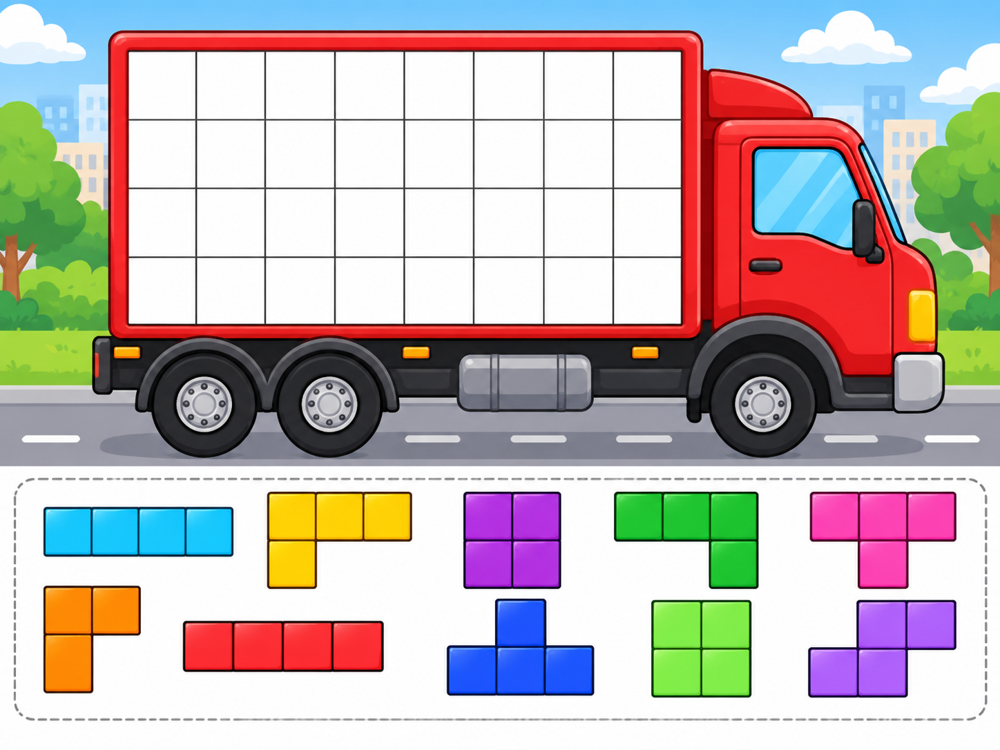
Carregando o Caminhão
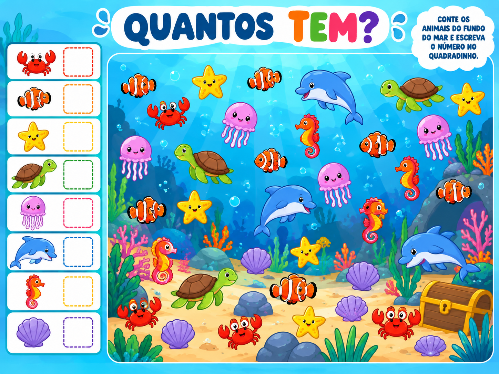
Quantos Tem?
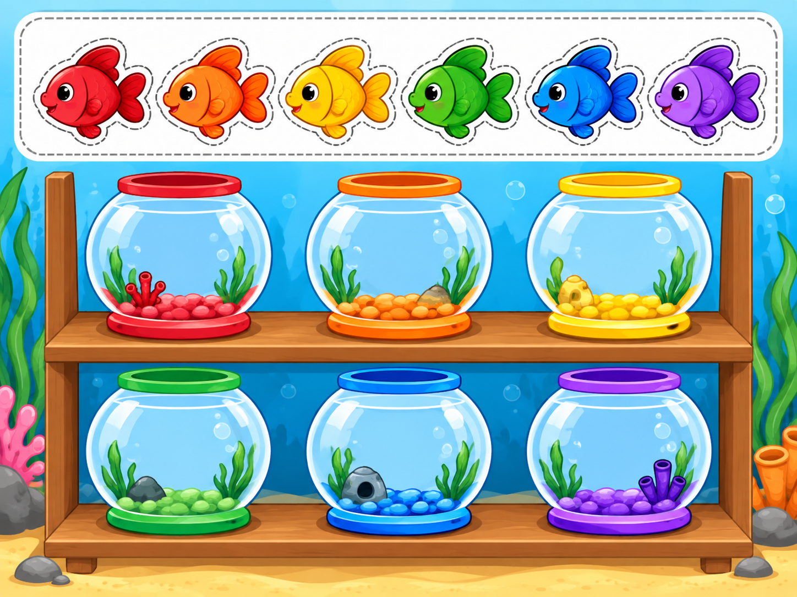
Peixinho no Lugar Certo
Estas 14 são a coleção-semente — fixam o formato e o padrão visual. A coleção completa com mais de 500 atividades vem em seguida, em PDFs prontos pra imprimir, no mesmo estilo.
Do plano pronto até a criança aplicando
Escolha
Abra seu plano e escolha a atividade do dia.
Imprima
Em minutos, direto de casa ou de uma lan house/gráfica.
Aplique
Cada atividade já vem com instrução simples pra você guiar.
Depoimentos de quem já está usando
Espaço reservado — só entra aqui relato real, com nome e contexto verdadeiros. Nada fabricado.
Em vez de comprar depoimento pronto: as primeiras famílias entram com preço especial em troca de um retorno sincero em 7 dias — vira prova social de verdade, e ainda testa se o plano faz sentido antes de escalar mídia paga.
Compra única, plano personalizado, acesso vitalício
Kit Essencial
- ✓ Quiz personalizado + plano por idade, comunicação e desafio
- ✓ Mais de 500 atividades, organizadas nas 6 áreas de apoio
- ✓ Acesso vitalício, sem mensalidade
- ✓ Suporte por e-mail/WhatsApp
Kit Completo
- ✓ Tudo do Kit Essencial
- ✓ Atividades novas todo mês, sem custo extra
- ✓ Planos ilimitados: refaça o quiz quando o desafio mudar
- ✓ Rotina semanal ilustrada em PDF pra imprimir
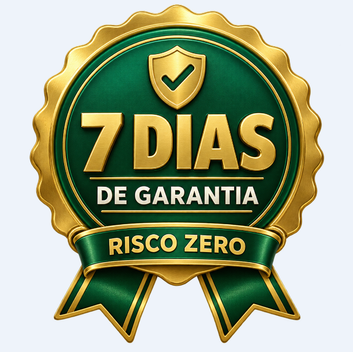
Garantia de 7 dias. Usou e não fez sentido pra rotina de vocês? Devolvemos 100% do valor, sem perguntas.
Apoio complementar ao acompanhamento com terapeuta ocupacional, fonoaudiólogo, psicólogo ou psicopedagogo. Não substitui esse acompanhamento.